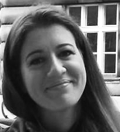
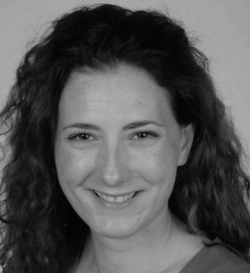

What is EVO Internship Portal?
EVO Internship Portal is an online platform that helps Croatian university students to find and apply for internships in research laboratories across Europe. EVO (a non-profit organization "Society for Out of Frame Education", HR: "Društvo za edukaciju van okvira"), as a third party, with its rich experience in similar programmes and numerous contacts inside the network of Summer School of Science alumni, will serve as a strong connection between students and laboratories interested in offering research opportunities, therefore contributing to their continuing education and development.
We would strongly encourage all interested students who need advice regarding their funding and internship applications (e.g. specific questions on how to write a motivational letter, Curriculum Vitae, questions about the procedure, where to find funding or virtually any other question) to contact us at evointernshipportal AT gmail.com. We will do our best to answer your enquiries as soon as possible.
What do I have to do to get the internship?
STEP 1 - Browse through the list of projects we prepared for you and select the one(s) you find most interesting
STEP 2 - Write an e-mail to the laboratory contact person with a few sentences about yourself and the reasons behind your interest in the laboratory. Attach your CV and any additional documents required by the particular laboratory.
STEP 3 - After being selected by the laboratory, prepare your funding application. We suggest applying for Erasmus Placement Programme (deadline: 02.12.2013) and/or FEBS Summer Fellowship (deadline: 01.04.2014). ERASMUS program gives students the opportunity to apply for a placement grant for an internship in Europe (outside of Croatia). Applications are handled on a first-come-first-served basis. The placement must be no less than 3 months and no more than 12 months and can take place any time of the year until 30.09.2014. For more information please look at the official call for applications at the University of Zagreb.
IMPORTANT: If you want us to advise you on your e-mail and CV please contact us before you contact the respective laboratory. Also, feel free to contact us about any questions on funding opportunities and writing your fellowship application.
Why are we doing this?
We would like to help students in Croatia obtain useful contacts abroad and gain valuable research experience through opportunities that may not be available at their home university. We were privileged to receive similar opportunities at an early stage of our education and we believe it made an invaluble impact on our career. We would like to use our contacts and experience to provide similar opportunities for the new generations of students. In other words, we wish we had a Portal like this when we were in your shoes!
Who is behind this project?
Antonija Burcul is a 2nd year Master student of structural biology and biophysics at ETH Zurich, Switzerland. She finished her B.Sc. in chemistry at University of Zagreb during which she spent a semester abroad at the National University of Singapore. In her free time she used to proofread motivational letters and CVs for her friends and now she’s here to help you as well.
Andela Saric is a postdoctoral fellow at University of Cambridge, UK. She received her diploma in chemistry from University of Zagreb and PhD in chemical physics from Columbia University in New York, USA. She is a walking advert for scientific mobility and is here to help you gain your own experience.
Copyright © 2013 Society for Out of Frame Education (EVO). All rights reserved.
Web design: Martina Mijuskovic. Logo design: Lucija Silic.